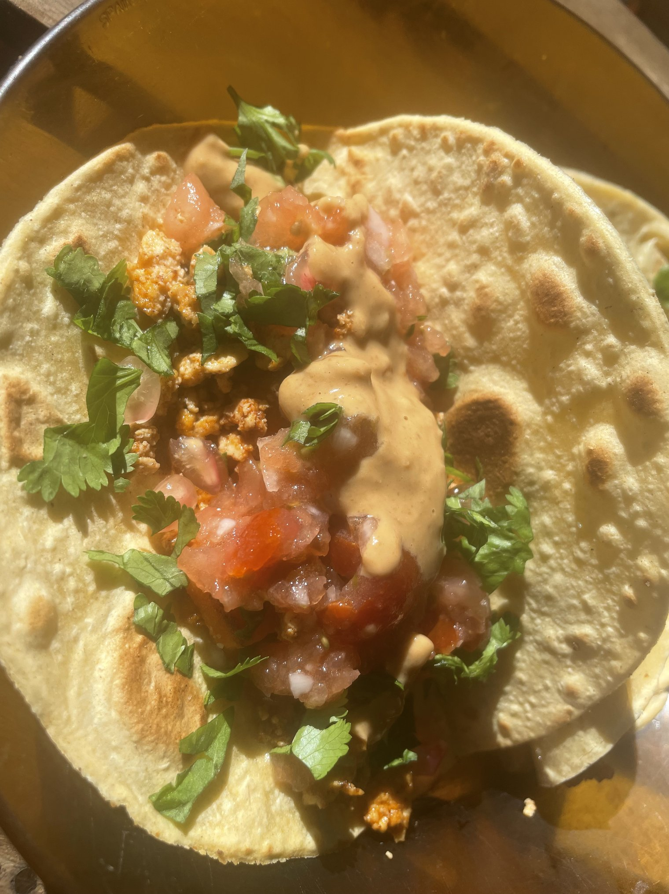

Tacos de boniato al horno, tofu, pico de gallo y granada
Ingredientes
2×
- 1 boniato
- aceite de oliva
- sal
- 200 g de tofu
- 1 cdta de pimentón
- 2 tomates
- 0.5 cebolla
- cilantro
- zumo de lima
- 4 tortillas
- granada
- 1 aguacate

Preparación
Paso 1
Cortar 1 boniato en trozos y hornear 30min a 200ºC con aceite de oliva y sal.
Paso 2
Desmenuzar 200 g de tofu y dorarlo en la sartén con un poco de aceite, 1 cdta de pimentón y sal.
Paso 3
Preparar el pico de gallo: picar 2 tomates, 0.5 cebolla y cilantro, y aliñar con zumo de lima y sal.
Paso 4
Calentar 4 tortillas y rellenar con el boniato, el tofu, el pico de gallo, granada, más cilantro y 1 aguacate.
Resumen
1 boniato
aceite de oliva
sal
Cortar hornear 200ºC
200 g de tofu
1 cdta de pimentón
Desmenuzar dorarlo
2 tomates
0.5 cebolla
cilantro
zumo de lima
Preparar picar
4 tortillas
granada
1 aguacate
Calentar